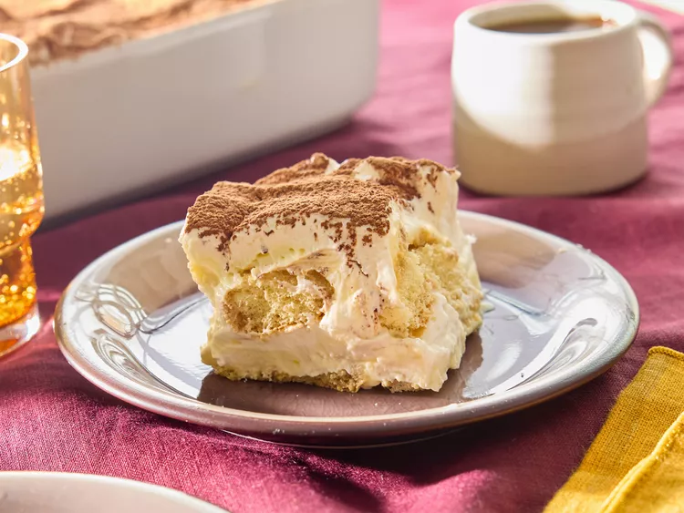

Tiramisu recipe

Description
The tiramisu come from Italy.
It's a simple cake made with speculos, cream and coffee.
Ingredients
- 7 eggs
- 2*boudoirs
- 1*speculos
- 150g sugar
- coffee
- 500g mascarpone cheese
- vanilla
- chocolate powder
Steps
- Separate the yellow from the eggs
- Make the white part as snow
- Chake the sugar, vanilla and mascarpone together
- Put the white egg in and chake it slowly on the same direction
- Put speculos as a base and add cream on it
- Take boudoirs soak it a little bit with coffe and put it upon the cream
- Add cream on it and now to the same but soak more the boudoirs with coffee
- Continue like this until you reach the top of your box and now put all the cream
- Add the chocolate powder on it
- Let the tiramisu rest on the fridge for minimum 5 hours
- Enjoy !
Return to menu